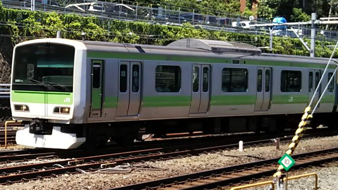
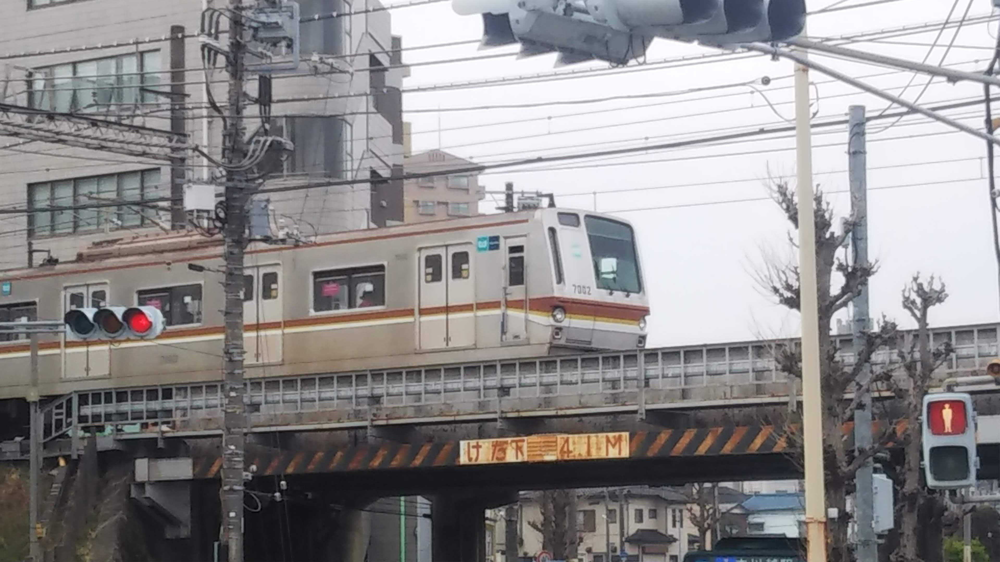
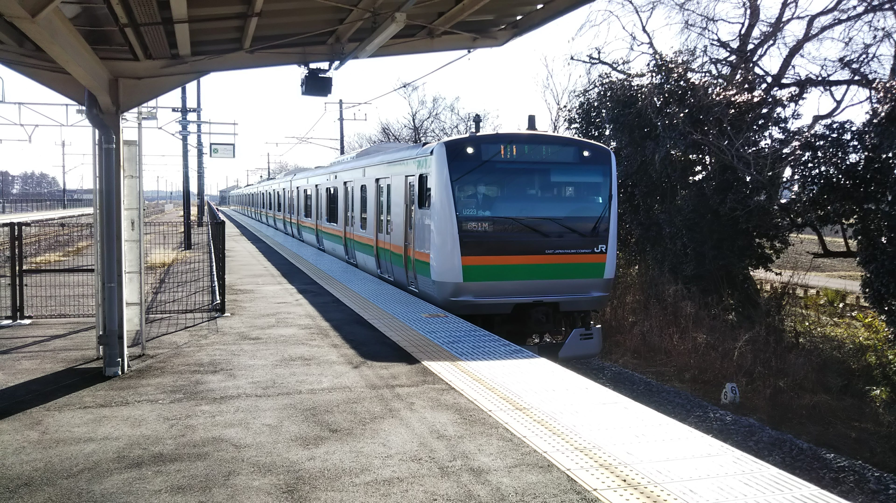
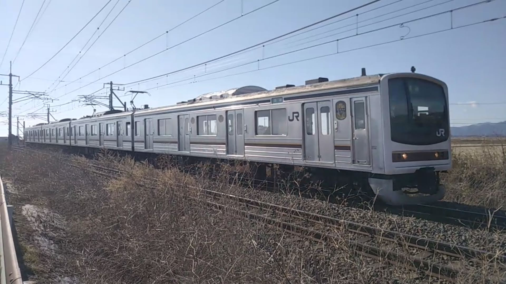
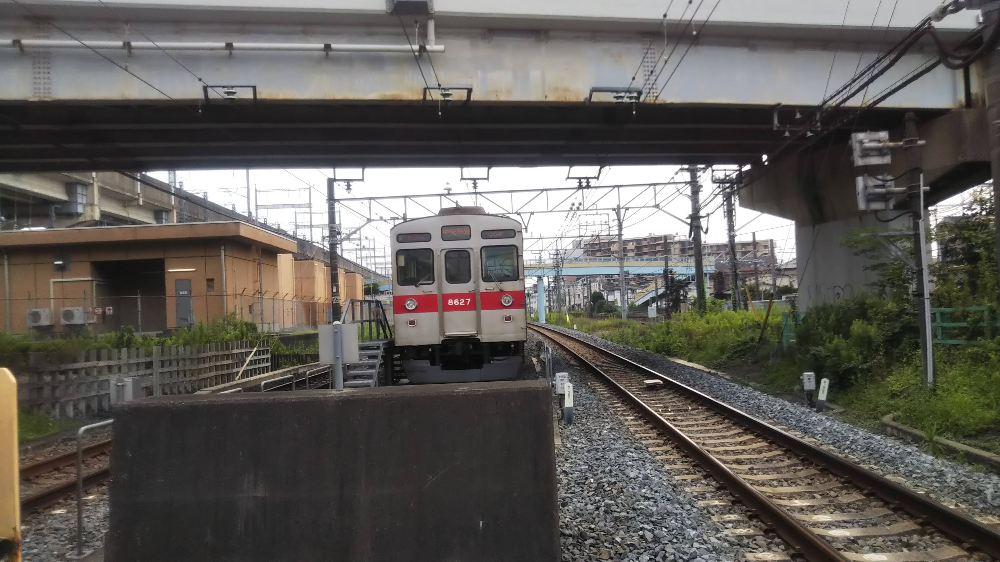
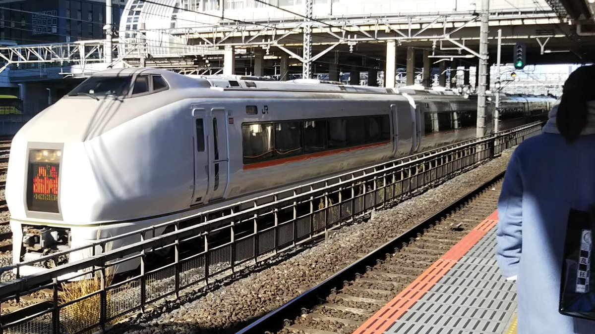

<html>
    <title>今は見れない光景のページ</title>
    <body bgcolor="0050ff" text="ffffff" link="00ff80" vlink="00ff80"></body>
    <head>
        <meta charset="UTF-8">
                 <meta name="viewport" content="width=device-width">
    </head>
    <h1>今は見れない光景のページ</h1>
    昔は当たり前だったが失われてしまった光景を載せているだけのページ<br><br>
    <br>
    E3系0番台R21編成 2019年3月22日 大宮駅<br>
    <br>
    205系M31編成 2019年12月29日 府中本町駅<br>
    <br>
    205系銀メルヘン(編成不明) 2019年4月3日 撮影駅不明<br>
    <br>
    205系車内 2019年12月29日 府中本町駅<br>
    <br>
    205系方向幕 2019年12月29日 南浦和駅<br>
    <br>
    E4系P12編成 2020年8月6日 大宮駅<br>
    <br>
    205系600番台Y11編成 2021年4月23日 宇都宮駅<br>
    <br>
    205系600番台Y1編成 2019年3月22日 雀宮駅<br>
    <br>
    E231系500番台512編成 2019年8月6日 上野駅<br>
    <br>
    7000系7102F 2021年3月25日 埼玉県川越市<br>
    <br>
    E233系3000番台U223編成 2022年1月9日 蒲須坂駅<br>
    <br>
    205系600番台Y2編成 2022年1月9日 栃木県さくら市<br>
    <br>
    8500系8627F 2020年8月7日 埼玉県久喜市<br>
    <br>
    651系1000番台あかぎ号 2020年1月5日 さいたま新都心駅<br>
    <br>
    E2系とき号 2022年11月19日 熊谷駅
    <br><br>
    <a href="https://10102site.github.io/saro/">戻る</a>
</html>
